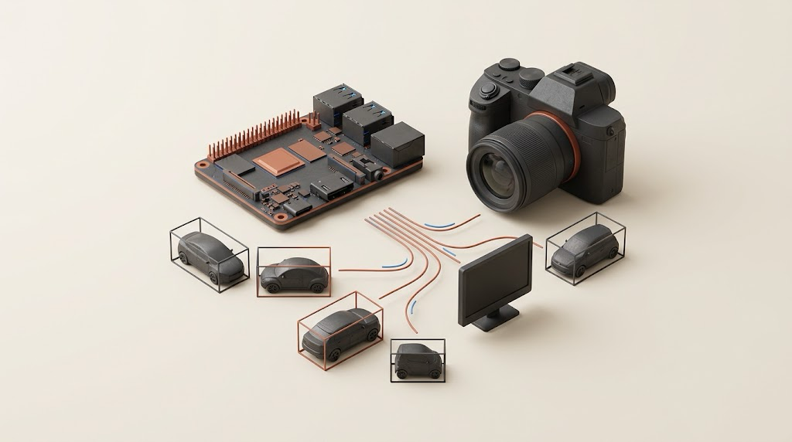

Set the direction
AI and data strategy, transformation roadmaps, investment choices and executive advisory.
Senior Manager / AI Architect at EY Brisbane, Australia
I am a Senior Manager and AI Architect at EY Australia. I connect enterprise strategy and responsible AI with practical engineering—from data and document systems to computer vision at the edge.

Dr. Muhammad Zohaib Jan brings more than 15 years of international experience across consulting, financial services, government, defence, higher education and research.
He works at the intersection of business strategy and technical execution—helping organisations adopt AI responsibly, modernise enterprise data capabilities and deliver complex transformation programmes.
His leadership approach combines commercial awareness, governance and people development with the technical depth to challenge architecture decisions, guide practitioners and translate emerging technology into sustainable business outcomes.
Follow the career journeyAI and data strategy, transformation roadmaps, investment choices and executive advisory.
Responsible AI, privacy, information governance, risk and high-assurance delivery.
Multidisciplinary teams, technical recruitment, mentoring and delivery leadership.
Enterprise architecture, data platforms and practical AI with measurable outcomes.
A career built across industries where trust, sound judgement and technical rigour matter.
Leads a multidisciplinary, distributed AI and Data pod providing technical assurance for a major financial-services transformation.
Advises across data assurance, information governance, privacy and enterprise architecture, while contributing to AI and Data proposals, solution approaches and implementation roadmaps.
Led enterprise data-platform, AI, analytics, architecture and governance work in a regulated environment, with responsibility for people, partners and capability building.
Managed strategic technology relationships and contributed to platform investment, licensing, architecture and vendor decisions.
Provided technical leadership on strategically significant, high-assurance AI research and development across computer vision, edge AI and synthetic data.
Guided delivery, mentored engineers and worked across multidisciplinary research and engineering teams.
Earlier roles span higher education and applied research, banking technology, software engineering, project delivery and team leadership.
This cross-sector foundation continues to shape a pragmatic approach to enterprise technology—grounded in how people, operations and systems actually work.
Selected, publicly shareable outcomes from government, defence and enterprise transformation work.
Government · Inspection transformation
Directed an inspection and reporting solution that reduced processing time by approximately 75%, with estimated annual operational savings of A$540,000 across roughly 2,400 inspections.
Sanitised case summaryEnterprise AI · Reusable capability
Reusable AI architecture and delivery patternsHelped establish reusable AI capability to support prototype delivery, governance and consistency across teams.
Regulation · Licence review
Process quality earlier information checksLed an LLM-enabled initiative that helped applicants identify missing information earlier in the review process.
Financial services · Data assurance
Leads assurance across structured and unstructured information moving between enterprise environments, with emphasis on classification, privacy, redaction and appropriate information transfer.
Strictly NDA-safeSource code, design decisions and validation notes across edge vision, document AI and data platforms.
Jetson Edge Vision, FieldWise and Vision Training Hub are fresh portfolio reference implementations recreated from high-level project ideas. They contain no employer or client source code, and do not reproduce historical deployment results. Explore the broader product work at Beyond Human ↗.

01 · New reference implementation
C/C++ · DeepStream · GStreamer · ZeroMQ
A YOLO metadata pipeline with first-run TensorRT engine caching, custom GStreamer elements and a browser console. Includes a synthetic simulator; Jetson hardware validation is pending.
Inspect edge architecture02 · New reference implementation
Python · SQLite FTS5 · FastAPI · OpenAI
Versioned engineering-document retrieval, inspectable source passages, abstention and a synthetic evaluation set. Runs locally with extractive answers; generated answers are optional.
Inspect retrieval and evaluation03 · Public engineering project
Snowflake · Streamlit · Containers
Application scaffolding, deployment templates and operational helpers for AI applications on Snowflake.
Explore the framework04 · Public engineering project
Python · OCR · FastAPI
A local document-redaction MVP with synthetic fixtures, image-only PDF verification and documented security boundaries.
Explore the redaction pipeline05 · Public engineering project
Python · PDF processing
Document scanning code with setup instructions and explicit limitations for detecting potentially sensitive content.
Explore the scanner06 · Research code
MATLAB · Optimisation · Classification
An entry point into the MATLAB research collection, with paper context, dependencies and reproducibility notes.
Explore research code07 · New reference implementation
Python · YOLOv8 · FastAPI · MLflow
A training portal with validated image datasets, a persistent job queue, available-GPU scheduling, background training and MLflow tracking. Includes a tested simulation mode; real GPU training validation is pending.
Explore training orchestrationExplore seven focused public editions, with source code, setup instructions and validation notes.
Machine learning, computer vision, explainable AI and enterprise applications—published across recognised IEEE, ACM and international venues.
Systematic review · Enterprise AI
Applied research · Defence manufacturing
IEEE Transactions · Ensemble learning
Computer vision · Applied deep learning
Healthcare AI · Multimodal systems
Optimisation · Ensemble learning
No selected publications match that search.
A regular university guest speaker, Zohaib shares practical perspectives on enterprise AI, leadership and the journey from research to responsible organisational value.
“Effective technology leadership means building capable teams, asking informed questions and maintaining a clear line of sight to business value.
Leadership philosophy
Connect
For executive opportunities, advisory conversations, research collaboration and speaking enquiries.